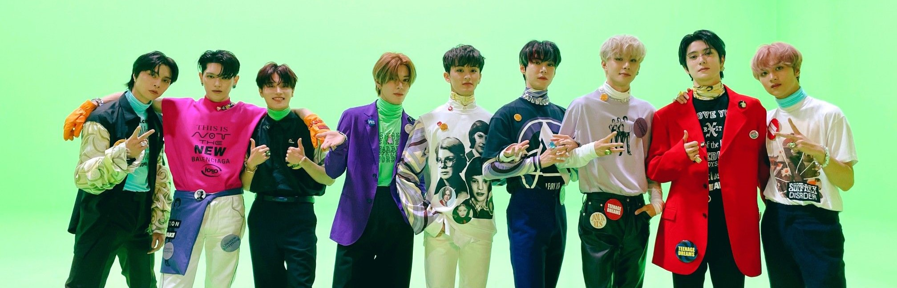

History
NCT 127 is the second sub-unit of NCT. They debuted on July 7, 2016 on M Countdown with their debut stage for "Firetruck", the title track from their first mini album, NCT #127, which was released on July 10. The number 127 refers to the longitude for Seoul, where they are based. On January 6, 2017, the group made a comeback with two new members, Johnny and Doyoung. On September 17, 2018, Jungwoo was announced as a new member of the unit.
2016
On 2016, SM Entertainment announced the first seven members, Haechan, Yuta, Winwin, Taeyong, Jaehyun, Mark, and Taeil.
2017
On December 27, SM Entertainment confirmed that NCT 127 would release their second EP Limitless in January 2017. The label then announced that new members Johnny and Doyoung would join with NCT 127, becoming a nine-member boy group, with Doyoung having previously debuted with NCT U in April 2016.
2018
On October 12, along with the release of a new teaser video, the label confirmed that member Jungwoo would officially join the lineup for their upcoming first full-length album, titled Regular-Irregular. Due to his preparations to debut with China-based sub-unit WayV, member Winwin did not join the group's promotional activities for the release of the repackage.
2019
In January 2019, NCT 127 announced their first concert tour, Neo City –
The Origin, with stops in South Korea and Japan from January to March.
The tour was extended to North America, with twelve shows in April and
May 2019, and an additional nine in Latin America, Europe, and Southeast Asia from May through July 2019.
In April 2019, the group announced their fourth EP, We Are Superhuman,
released on May 24, 2019, and performed once again as a nine-piece
group, with Winwin continuing to promote solely as a member of WayV.
2020
On March 6, 2020, the group released their second Korean studio album, Neo Zone featuring lead single "Kick It". Several members took part in songwriting for the album. Neo Zone debuted at number five on Billboard 200 with more than 87,000 units sold in the first week On May 19, the group released Neo Zone: The Final Round, a repackage of Neo Zone. The album was released alongside lead single "Punch", which NCT 127 premiered live during their Beyond Live concert two days prior. The group reunited with the rest of the NCT members for their second studio album, NCT 2020 Resonance Pt. 1 and NCT 2020 Resonance Pt. 2, released on October 12 and November 23, respectively. NCT 127 recorded the track "Music, Dance" for the album.
2021
On September 17, their third Korean studio album, Sticker, was released. The album consists of eleven tracks, including the lead single of the same name. Sticker also became the group's highest ranking album on the Billboard 200 at number three and the highest ranking K-pop album on the chart in 2021. NCT 127 released the repackage version of Sticker, Favorite, and its lead single "Favorite (Vampire)" on October 25, 2021. The repackage accumulated 1.06 million copies in pre-order sales and sold over 1.1 million copies in one week after its release. On December 17, NCT 127 kicked off their second world tour with three shows at Gocheok Sky Dome in Seoul, promoted as NCT 127 2nd Tour 'Neo City: Seoul – The Link'.
2022
On September 16, NCT 127 made their comeback with their fourth studio album 2 Baddies and its title track of the same name. The album sold 1.5 million copies in its first week, becoming the highest-selling album by an SM Entertainment act within its week debut. The album surpassed 3.2 million sales in January 2023 following the release of its reissue titled Ay-Yo, making it NCT 127's second triple-million selling album. The show, titled Neo City: Seoul – The Link+, featured a new set list that included tracks from their fourth studio album 2 Baddies. NCT 127 continued touring in Asia in November and December 2022, playing shows in Jakarta, Indonesia and Bangkok, Thailand.
2023
In January 2023, they continued their Neo City – The Link tour in North
America, performing in Chicago, Houston, and Atlanta. In the same month,
they held shows in São Paulo, Brazil, Santiago, Chile, and Bogotá,
Colombia, with the lattermost becoming the first large-scale K-pop concert
in the country. NCT 127 concluded the tour in Mexico City on January 28.
On October 6, NCT 127 released their fifth studio album Fact Check,
alongside its title track of the same name. On October 16, SM
Entertainment announced NCT 127's third world tour, Neo City – The
Unity.It will commence with six concerts at the KSPO Dome in Seoul
from November 17 until November 26, and will continue in 2024 with a dome
tour in Japan.